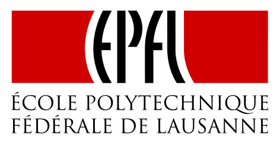
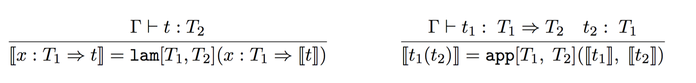
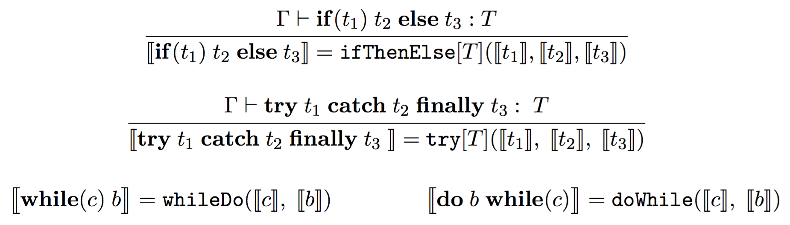
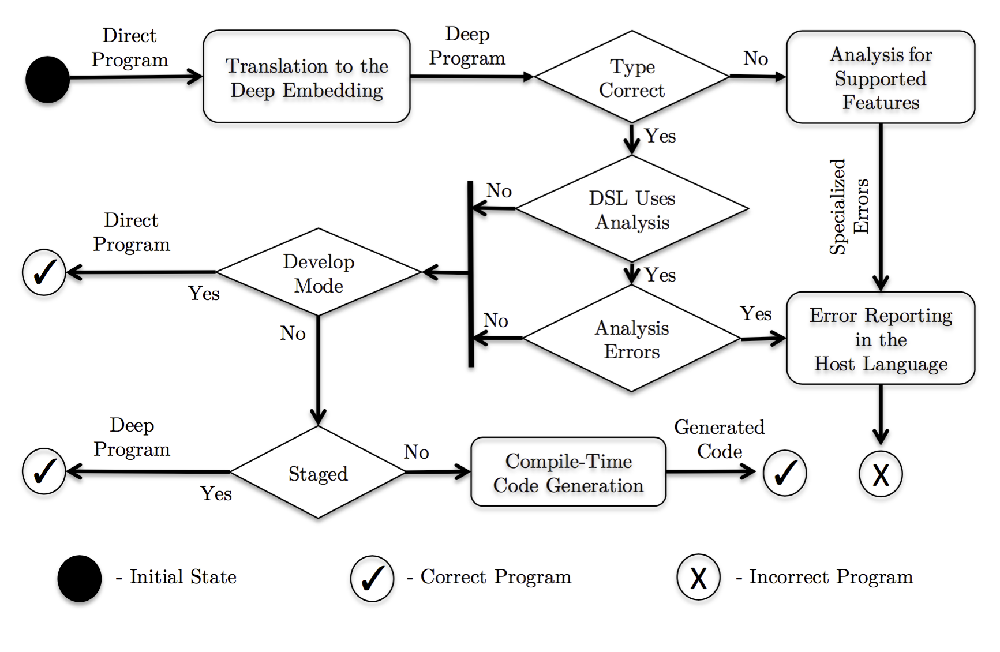

Language Support for Embedded
Domain-Specific Languages
PhD Thesis Defense

Student: Vojin Jovanovic Advisor: Martin Odersky
External Domain-Specific Languages
Restricted language crafted for a specific domain:
SELECT name, email
FROM gmail_accounts as m, github_accounts as g
WHERE m.username = g.username
AND prog_language = "Scala"
AND lang_level > 30
Domain knowledge enables orders-of-magnitude speedups:
$R \bowtie S = S \bowtie R$
$(R \bowtie S) \bowtie T = R \bowtie (S \bowtie T)$
Properties of External DSLs
For a DSL user an external DSL:
- Provides a friendly interface
- Exhibits high performance
Hard to develop as the DSL author must:
- Implement a parser
- Implement a typechecker
- Implement a back-end
- Provide IDE integration, debugging, and other tools
Summary of External DSLs
| External DSLs | |||
|---|---|---|---|
| User Friendly | ✓ | ||
| High-Performance | ✓ | ||
| Development Effort | X$^1$ |
1. Language workbenches aim to simplify DSL development.
Embedded Domain-Specific Languages
DSLs embedded$^1$ in an existing general purpose host language:
val (q1, q2) = (Query[GmailAccount], Query[GithubAccount])
val username = (q1 join q2)
.filter({ case (m, g) => m.username == g.username})
.filter({ case (m, _) => m.progLanguage == "Scala"})
.filter({ case (_, g) => g.languageLevel > 30})
.map(_._1.username)
Reuse of the host language facilities simplifies the development process
1. Paul Hudak, "Building domain-specific embedded languages", CSUR 1996.
Shallow Embedding
Values in the embedded language are directly represented by the values in the host language:
val (q1, q2) = (Query[GmailAccount], Query[GithubAccount])
val username: String = (q1 join q2)
.filter({ case (m, g) => m.username == g.username})
.filter({ case (m, _) => m.progLanguage == "Scala"})
.filter({ case (_, g) => g.languageLevel > 30})
.map(_._1.username)
User friendly as they fit well in the host language
Low performance due to abstraction overhead and lack of domain knowledge
We focus on direct embedding, in which the types of a DSL is the same as the types in the host langauge.
Deep Embedding
Values in the embedded language are represented symbolically by the values in the host language
// symbolic representation
trait Rep[T]
case class Const(v: Int) extends Rep[Int]
case class Minus(l: Rep[Int], r: Rep[Int]) extends Rep[Int]
// lifting
implicit def lift(i: Int): Rep[Int] = Const(i)
implicit class IntOps(l: Rep[Int]) {
def -(r: Rep[Int]): Rep[Int] = Minus(l, r)
}
val y: Rep[Int] = 1024
val x: Rep[Int] = y - 1
execute(x)
Leak internals, hence not user friendly
High performance due to access to the domain-knowledge
No "Silver Bullet" for Implementing DSLs
| External DSLs | Deep DSLs | Direct DSLs | |
|---|---|---|---|
| User Friendly | ✓ | X | ✓ |
| High-Performance | ✓ | ✓ | X |
| Development Effort | X | O | ✓ |
This Thesis
| DSL Kind | Deep and Direct Combined | |
|---|---|---|
| User Friendly | ✓ | Part I |
| High-Performance | ✓ | Part I |
| Development Effort | ✓ | Part II |
Part I: User friendliness matters during program development and performance in production—use direct embedding for program development and translate to the deep embedding in production.
Part II: Use the direct embedding as a specification for generating the deep embedding.
Part I: Improving the User Experience with Deep Embeddings
Abstraction Leaks in the Deep Embedding
DSL types are necessarily exposed in the interface:
def map[U](fn: Rep[T => U]): Rep[Vector[U]]
Type Rep raises questions:
- Is
Rep[T => U]a function? How is it applied correctly? - Why not
Rep[T] => Rep[U]? - Why not
Vector[Rep[U]]instead ofRep[Vector[U]]?
Defining recursive functions becomes complicated:
def fact(n: Rep[Int]) = if(n > 1) n * fact(n - 1) else 1
always causes infinite recursion.
Deep Embedding: Difficult Debugging
Stepping inspecting values and stepping into functions:

reveals the intermediate representation (IR):

Deep Embedding: Cryptic Type Errors
A seemingly correct query:
Query[Coffees].map(c =>
if(c.origin == "CH")
"Good"
else
c.quality
)
Yields incomprehensible type errors:
<error> Don’t know how to unpack Any to T and pack to G <error> Not enough arguments in method map: (implicit shape: scala.ql.lifted.Shape[Any,T,G]) :scala.slick.lifted.Query[G,T]
Impossible to restrict the embedded language
Direct Embedding and Deep Embedding
| Development | Production |
|---|---|
| |
Translation to the Deep Embedding
| Development | Production |
|---|---|
| |
Translation: Language Virtualization
Functions
Control Constructs
Does not support definitions: classes, traits, and objects
Translation Preserves Well-Typedness
Generic Polymorphic Embedding
- Proven by Carette et al. 2009
Eager Inlining
- Proven in A.1 of the thesis
Custom Types
- Correctness depends on the deep embedding implementation
Error Reporting: Language Restriction
Direct embedding API can be richer than the deep embedding:
Query[Coffees].map {
(c: Coffee) =>
if(c.origin == "CH") {
println("Due to Nestle's good import policy.")
"Good"
} else
c.quality
}
Analise if a deep operation exists in the deep embedding
Report precise errors:
<error> Predef.println is not supported by the Query DSL.
println("Due to Nestle's good import policy.")
^
Problems Related to Run-Time Compilation
IR construction and DSL compilation executed every time
val y: Rep[Int] = lift(1024)
val x: Rep[Int] = y - lift(1)
execute(x)
Overheads range from 0.2 - 24 $\mu$s per line of code (LoC)$^1$
Domain-specific error reporting happens at runtime:
<error> Can not compile a conditional expression to SQL.
1. A line of code reifies 5 IR nodes.
Reification at Host-Language Compile-Time
Translated programs contain no captured variables
Can be evaluated independently of the compilation context
Interpret the translated program to acquire an instance of the reified DSL
Domain-Specific Errors at Compile Time
Perform domain-specific analysis on the reified DSL instance
Report errors with the standard host-language error reporting
Simple author-facing interface for error reporting:
trait Position {
def source: File
def line: Int
def column: Int
}
trait Reporter {
def info(pos: Option[Position], msg: String): Unit
def warning(pos: Option[Position], msg: String): Unit
def error(pos: Option[Position], msg: String): Unit
}
Reducing Run-Time Overheads
Single stage DSLs – execute DSL compilation at host-language compile time:
- Use the acquired instance to generate host language code
- No run-time overhead
Two stage DSLs – cache the reified DSL and re-use it:
- Negligible run-time overhead
Putting it All Together
Evaluation
Developed a front-end for OptiML and OptiGraph DSLs
In 1284 lines of ported application code:
- Obviated 96 Rep annotations
- Obviated 5 lift annotations
Provided a new interface for the Slick DSL:
- Only 1 month of development for the front-end
- ~1000 lines of code
- 50+ tests are passing
- Improves performance for 10 - 380 $\mu$s per execution
Part II: Automating Deep Embedding Development
Deep Embedding: Development Effort
Problems:
- Retrofitting with the host language
- Lots of boilerplate
- Maintaining two versions (direct and deep)
Solution:
- Generating deep embedding from direct embedding
Direct Interface Defines the Deep Interface
class Vector[T: Numeric](val data: Seq[T]) {
def map[S: Numeric](f: T => S): Vector[S] =
new Vector(data.map(x => f(x)))
def +(that: Vector[T]): Vector[T] =
new Vector(data.zip(that.data)
.map(x => x._1 + x._2))
}
The deep embedding interface must be the following:
[[framework-specific]]
trait VectorOps extends Base {
implicit class VectorRep[T:Numeric](v: Rep[Vector[T]]) {
def data(implicit [[framework-specific]]): Rep[Seq[T]] =
[[framework-specific]]
def +(that: Rep[Vector[T]])
(implicit [[framework-specific]]): Rep[Vector[T]] =
[[framework-specific]]
def map[S](f: Rep[T] => Rep[S])(n: Numeric[S])
(implicit [[framework-specific]]): Rep[Vector[S]] =
[[framework-specific]]
}
}
Case Study: LMS
trait VectorOps extends Base {
implicit class VectorRep[T:Numeric](v: Rep[Vector[T]]) {
def +(that: Rep[Vector[T]])
(implicit sc: SourceContext): Rep[Vector[T]] =
vector_plus(this, that)
}
}
trait VectorExp extends VectorOps with BaseExp {
// case classes
case class VectorPlus[T:Numeric:TypeTag]
(self: Rep[Vector[T]], v2: Rep[Vector[T]])
extends Def[Vector[T]]
def vector_plus[T:Numeric:TypeTag]
(self: Rep[Vector[T]], v2: Rep[Vector[T]])
(implicit sc: SourceContext): Rep[Vector[T]] =
VectorPlus(self, v2) // IR node construction
// IR constructors for ‘map‘ is elided
}
Body Translation to Preserve Semantics
Use method bodies:
class Vector[T: Numeric](val data: Seq[T]) {
def +(that: Vector[T]): Vector[T] =
new Vector(data.zip(that.data).map({
x => x._1 + x._2
}))
}
Define semantics of the deep embedding:
trait VectorLowLevel extends VectorOps
with SeqLowLevel {
// Low level implementations
override def vector_plus[T:Numeric:TypeTag]
(self: Rep[Vector[T]], v2: Rep[Vector[T]]): Rep[Vector[T]] = {
VectorPlus(self, v2) atPhase(Lowering) {
$newVector(self.data.zip(v2.data).map($lam {
x => x._1 + x._2
}))
}
}
}
Related Work and Evaluation
Forge is a specification EDSL for generating Delite-specific deep embedding.
Lines of code for direct EDSL, Forge specification, and deep EDSL.
| EDSL | Direct | Forge | Deep |
|---|---|---|---|
| OptiML | 1128 | 1090 | 5876 |
| OptiQL | 73 | 74 | 526 |
| Vector | 70 | 71 | 369 |
Managing Dynamic Compilation of DSLs
Abstraction for Tracking Program Slices
Show Case: Cost Function for Matrix-Chain Multiplication
def cost(p: SD[Array[Int]]) {
val n = p.length - 1
m = sd(Array).fill[Int](n, n)(0)
s = sd(Array).fill[Int](n, n)(0)
for (ii <- 1 until n;
i <- 0 until n - ii) {
val j = i + ii
m(i)(j) = Int.MaxValue
for (k <- i until j) {
val q = m(i)(k) +
m(k + 1)(j) +
p(i) * p(k+1) * p(j+1)
if (q < m(i)(j)) {
m(i)(j) = q
s(i)(j) = k
}
}
}
}
Guard Execution Time
Matrix multiplication for:
- 3 - 8 matricesThe DSL scopes are still visible to the user
- 1 - 20 cache entries
Conclusion: DSLs as First-Class Citizens
Goal 1: use DSLs without even knowing it.
- The DSL scopes are still visible to the user
Goal 2: define DSLs as easy as libraries.
- The supported language is still restricted